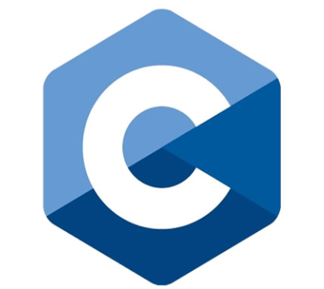

Hola, que tal? Soy Alexander Cristian Martinez, tengo 21 años actualmente soy estudiante
de Ingeniería en Sistemas en la Universidad Tecnológica Nacional (FRBA) y estoy cursando
el tercer año de la misma.
A su vez estoy como Ayudante de Catedra en la materia de Paradigmas de Programacion.
Me gusta programar, tanto asi que se convirtió en unos de mis hobbies.
Por lo cual me anote en paralelo a un curso de fullstack con Ptyhon para aprender un nuevo lenguaje de backend
y además aprender algo que nunca tuve la oportunidad de realizar que es la parte del frontend.
Con estos conocimientos espero lograr tener una buena base para buscar un trabajo de desarrollador. En
primer medida apuntaria al backend, que es lo que más conozco hasta el momento. A futuro buscaria algún
proyecto de fullstack o quien sabe si con algo de experiencia vaya por el camino del freelance.
Conocimientos
Nivel